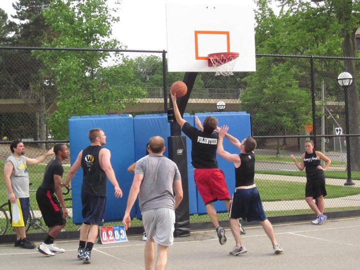

To me, my immediate family is the most important thing in my life. My parents have given me everything I have in this world and have helped me so much in furthering my future, from raising me right (in my opinion) on how to treat other people and to help when I can. To me, a family should be a close unit that loves each other and holds each other to the upmost respect. A family should all contribute to chores needed to be done to keep the house, etc. from falling apart. A family should also know how to have fun and be able to enjoy each other's presence. While my family certainly hasn't always followed these ideals, it is always great when it feels like we do.
Entertainment
“Don't aim at success. The more you aim at it and make it a target, the more you are going to miss it. For success, like happiness, cannot be pursued; it must ensue, and it only does so as the unintended side effect of one's personal dedication to a cause greater than oneself or as the by-product of one's surrender to a person other than oneself. Happiness must happen, and the same holds for success: you have to let it happen by not caring about it. I want you to listen to what your conscience commands you to do and go on to carry it out to the best of your knowledge. Then you will live to see that in the long-run—in the long-run, I say!—success will follow you precisely because you had forgotten to think about it” - Viktor E. Frankl, Man's Search for Meaning
Community
I love being outdoors, and have a group of people that I'll try to go hiking with, though sometimes scheduling is hard. I also enjoy playing basketball, soccer, gaming, and reading when I can.

I went to high school at Germantown High School in Germantown, Tennessee. I was enrolled in the International Baccalaureate program and graduated with IB honors. Now, I am a junior at the University of Pittsburgh learning computational biology. I am also becoming EMT certified and hope to be a volunteer EMT in the summer.
It is my hope that all of my education and learning will accumulate with me earning my Medical Degree (hopefully at UPMC)